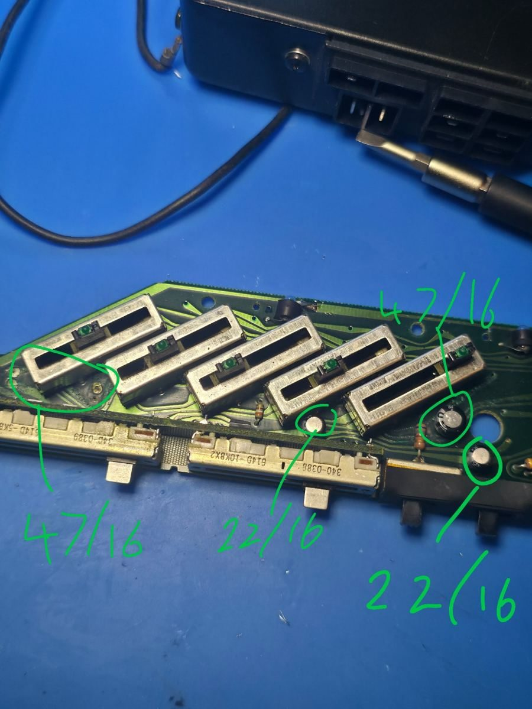
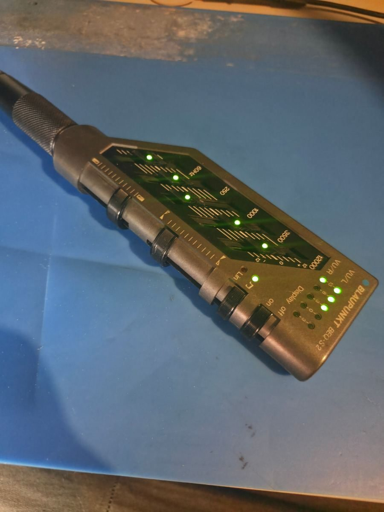

Blaupunkt BEQ-S2 car equaliser — right channel dropping out
Two capacitors had leaked electrolyte onto the board. We cleaned the board and replaced five electrolytic capacitors, and the right channel came back.
Amplifiers, powered and Bluetooth speakers, car audio and equalisers repaired at component level, including older equipment that can't be replaced. Post it to us from anywhere in the UK, or drop it off by appointment at our workshop in Watford.
Book a repairAll makes and models, old and new.
Home and car amplifiers, AV receivers and integrated amps: no sound, one channel dead, distortion, hum and protection faults.
No power, won't charge, and amplifier board faults in active, Bluetooth and smart speakers.
Head units, equalisers and amplifiers, including older and obsolete units that are hard to replace.
Graphic equalisers, crossovers and signal processors, including lighting and slider faults.
Older amplifiers, tuners and tape decks. See our vintage electronics repair page.
Mixers, headphone amps and other audio boards. Tell us what it is and what it's doing.
Real jobs from our bench.

Two capacitors had leaked electrolyte onto the board. We cleaned the board and replaced five electrolytic capacitors, and the right channel came back.

We found a failed inductor and a broken connection in the power supply, plus a separate fault in the slider lighting circuit. All three were repaired, each slider switch was opened and cleaned, and the unit was fully tested before return.
“Brilliant work!!!!Kalvinder M. · Google review
I have a 90s Blaupunkt setup in my car — an SQR88, CDP09 and BEQ-S2. The BEQ-S2 had failed diodes and capacitors, causing the right-hand channel to drop out.
A specialist in the Midlands quoted me £480 for the repair, which was far too expensive. I then posted a request in a local Watford Facebook group, and a chap from Precision Electronic said they should be able to fix it. I was sceptical at first, but they worked miracles and got the unit fully sorted for much less than the original quote.
Definitely recommended for obsolete and old-school car hi-fi equipment and other electronics!!!!!”
Some faults have a simple fix. Worth a few minutes before you book a repair.
Quoted individually. Every audio repair is different, so we quote before any work. No repair work starts until you've approved the price.
Parts are charged separately where needed. If we post it back, return postage is added at cost. If we can't repair it, there's no charge for our time. Full details in our terms.
By appointment. Collect it in person and there's no postage to pay.
From anywhere in the UK. Return postage is charged at exactly what the carrier charges us.
Our workmanship and any replacement parts are guaranteed for 12 months. Your statutory rights are not affected.
We repair the electronics in powered, Bluetooth and smart speakers: power, charging and amplifier board faults. Tell us the make and model and what it's doing.
Yes. Head units, equalisers and amplifiers, including older units that are no longer made. Send or drop off the unit itself, removed from the car.
Often, yes. Faults like failed capacitors are repairable at component level, even when replacement units are no longer available. We'll tell you honestly if it isn't worth it.
Every audio repair is quoted individually. No repair work starts until you've approved the price, and if we can't repair it there's no charge for our time.
Our workmanship and any replacement parts are guaranteed for 12 months. It covers the repair we carried out. Your statutory rights are not affected.
Tell us what it is and what it's doing, and we'll email you a free, no-obligation estimate.
Book a repair